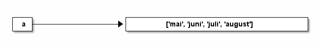
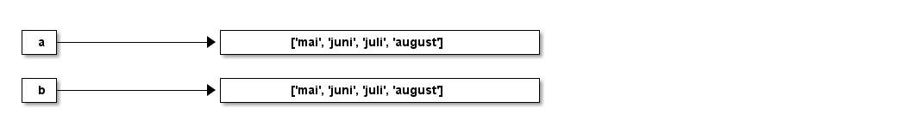
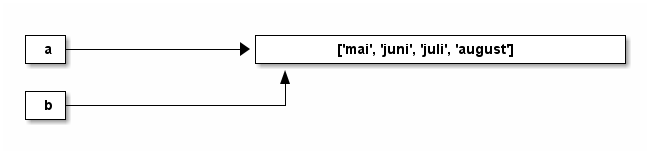

Variabler og datatyper
Innhold
Vi skal nå begynne å se på Python mer spesifikt.
Regnerekkefølge og kommandolinja
Siden Python-programmer kan oversettes til maskinkode løpende, kan vi jobbe interaktivt med Python, à la slik vi er vant med fra CAS i Geogebra. Vi kan altså, om vi ønsker, skrive en linje med kode, se hva denne gjør, for så å skrive neste.
For å åpne en enkel Python-«prompt» (som er navnet på det som i vårt tilfelle tegnene «>>>»), kan du åpne kommandolinjeverktøyet ved å trykke windows-tasten og skrive «cmd», trykke enter, og skrive python og trykke enter i vinduet som åpner seg. Du skal få fram noe lignende følgende:
Python 3.6.1 |Anaconda 4.4.0 (64-bit)| (default, May 11 2017, 13:25:24) [MSC v.1900 64 bit (AMD64)] on win32 Type "help", "copyright", "credits" or "license" for more information. >>>
Hver gang du ser >>> «prompter» Python deg til å skrive inn en kommando.
Vanlige regneoperasjoner gjennomfører vi i Python på akkurat den måten man skulle forvente.
>>> 2 + 3 # addisjon ved å skrive "+" mellom to verdier 5 >>> 2 - 3 # subtraksjon ved å skrive "-" mellom to verdier -1 >>> 2 * 3 # multiplikasjon ved å skrive "*" mellom to verdier 6 >>> 2 ** 3 # eksponentiering ved å skrive "**" mellom to verdier 8 >>> 2 * (5 - 3 ** 2) ** 2 # regnerekkefølge oppfører seg på "vanlig" måte 32
Av disse er det kun potensen som skiller seg ut fra hvordan vi «vanligvis» skriver regning.
Du kan med andre ord begynne å bruke Python som en kalkulator uten mer om og men … om enn kun å gjøre dette ville være å skrape den aller øverste delen av overflaten av hvilke muligheter et fullverdig programmeringsspråk byr på.
Prøv deg fram på vanlig tallregning i Python direkte i interpreteren.
Variabler
Vi kan nå gjennomføre enkle regneoperasjoner, men det melder seg raskt et behov for å kunne ta vare på resultatet fra en utregning, for så å kunne bruke dette i en annen utregning seinere. Dette kan vi gjøre via navngitte variabler.
Hva er et navn?
I Python viser navn alltid til verdier. Vi kan

I Python kan det godt være to navn på samme verdi.

Pythonic er dynamisk skrevet noe som vil si at vi kan gjenbruke navn på helt andre typer verdier enn hva de opprinnelig blei brukt på.
a = 42 b = a a = "Babel"
Som gir følgende navnstruktur:

Gode navn
Tilstreb å bruke beskrivende navn på variablene dine. For datamaskinen er de følgende to programsnuttene likeverdige, og begge skriptene kjører uten feil.
a = 3 b = 5 c = a * b ** 2
pi = 3 diameter = 5 areal = pi * diameter ** 2
Vi ser dog at den andre snutten inneholder en feil, i det minste om det er arealet av en sirkel vi forsøker å regne ut. Denne feilen ser vi kun når vi forstår at verdien 5 har navnet diameter, da vi veit at denne må halveres for å regne ut areal som gjort i linja under.
Tildeling
I følgende program, lager vi først en variabel x, som vi så opphøyer i andre og tredje.
x = 3 x_squared = x ** 2 x_cubed = x ** 3
Hva er verdien til x etter at programmet over har kjørt ferdig?
I Python kan vi også tildele flere variabler samtidig.
a = b = 3 c = a * b - 2
Hva er verdien til c etter at programmet over har kjørt ferdig?
I de aller fleste programmeringsspråk betyr ikke = det vi er vant til at det betyr fra matematikken. I matematikken ville vi leste \(x = y + 3\) som «/x/ er lik y pluss 3/». I Python, derimot, ville vi lest x = y + 3 som «sett x til å være verdien til y pluss 3», vi bruker = for å /tildele verdier til navn.
Dette er vesentlig, fordi vi sier ikke noe om likhet, kun navngivning. Dette kan vi for eksempel bruke til å oppdatere verdier. Matematisk er
\(x = x + 1\)
en likning uten svar. Forsøker vi dog å kjøre følgende python-skript, vil vi ikke få noen problemer.
x = 1 x = x + 1 # sett x til å ha verdien til x pluss 1
Her har x-en på høyre side verdien 1, altså oppdaterer vi nå x til å ha verdien 2. En slik stegvis økning av en variabel ser vi igjen og igjen, derfor har vi i Python forkortelsen x += 1 for å gjøre nettopp dette.
Skriv et program hvor du først lager fire navngitte variabler, før du bruker alle disse i en utregning.
Interaksjon
Printing
Fra de fleste programmer ønsker vi en eller annen form for informasjon ut fra programmet. Dette kan være at programmet lager en graf for oss, at den skriver data til en fil, at interpreteren skriver svaret direkte på mellomregninger, eller at programmet skriver tilbake til kommandolinja.
Sistnevnte gjøres via funksjonen print.
print("Hei, verden!")
Det er heller ikke noe i veien for å kombinere printing med variabler.
a = 2 b = 3 c = a + b print("Summen av ", a, " og ", b, " er ", c, ".")
Dette kan fort bli en uhensiktsmessig måte å skrive ut svar på, så vi bruker heller den innebygde formateringen f-strenger.
print(f"Summen av {a} og {b} er {c}.")
f-strenger er særegent for Python, men andre språk har gjerne sine måter å formatere tekstrestrenger på. Dette er et kraftig verktøy, hvor vi har store muligheter for å formatere svarene våre på en hensiktsmessig måte.
Vi kan, eksempelvis, spesifisere hvor mange desimaler vi ønsker. (Setningen from math import pi¨ skal vi se i mye mer detalj på seinere.
from math import pi print(pi) print(f'pi skrevet med 5 gyldige siffer er {pi:.5}.')
Generelt kan vi spesifisere et tall som skal skrives ut ved å bruke tallets totale bredde og dets presisjon på en enkel måte med f-strenger.
bredde = 7 presisjon = 3 print(f'pi = {pi:{bredde}.{presisjon}}')
Input
Å be brukeren om å taste inn verdier til programmet ditt kan enkelt gjøres ved å bruke input-funksjonen. Om vi er usikre på hvordan denne brukes, kan vi benytte oss av pythons innebygde hjelpefunksjonalitet.
help(input)
Help on built-in function input in module builtins:
input(prompt=None, /)
Read a string from standard input. The trailing newline is stripped.
The prompt string, if given, is printed to standard output without a
trailing newline before reading input.
If the user hits EOF (*nix: Ctrl-D, Windows: Ctrl-Z+Return), raise EOFError.
On *nix systems, readline is used if available.
input er altså en innebygd (built-in) funksjon som leser en tekststreng fra standard input. Dersom vi ønsker å gi brukeren en prompt, à la «>>>» kan vi gjøre det ved å gi det som argument til funksjonen.
navn = input("Hva heter du? ") print("fDu heter {navn}." )
Typer
Et pythonprogram er et sett med instruksjoner som handler på ulike objekter. Objekter i Python kommer i to utgaver, skalare objekter og ikke-skalare objekter. Et skalart objekt er udelelig, det er atomene1 i Python. Ikke-skalare objekter, for eksempel tekststrenger, har en indre struktur. Av de følgende, er boolske verdier, heltall og flyttall skalare objekter.
Boolske verdier
I kapittelet Datamaskinen introduserer jeg logiske verdier som enten kan være sanne eller usanne. Disse er nødvendige for at vi skal kunne ha et fullstendig programerbart språk. Når vi seinere skal se på såkalte if-setninger, er vi nødt til å ha en måte å avgjøre om noe er sant eller usant på.
>>> sann = True >>> usann = False >>> sann True >>> usann False
Boolske verdier oppstår ofte når vi ønsker å vurdere en påstand. Eksempelvis er det sant at verdien 3 er større eller lik verdien 2, det er også Python enig i.
>>> 3 >= 2 True >>> 3 == 2 False >>> 3 < 2 False
Merk at = ikke er en logisk sjekk, à la ulikhetene over. Om vi ønsker å sjekke for likhet, må vi bruke ==. = er fremdeles «tildelingoperatoren», vi bruker den for å gi ting navn, noe som betyr at det ikke er noe i veien for å gjøre for eksempel følgende i Python:
sannhetsverdi = 3 > 2 print(sannhetsverdi)
Her vil først Python evaluere påstanden på høyre side, altså 3 > 2, finne at dette er sant, og dermed sette sannhetverdi til å ha verdien True.
Heltall
Heltall i Python oppgis på vanlig måte. 3, 112 eller 1231421124.
Lister
Lister eller arrays er en klassisk datastruktur. Vi samler en rekke verdier inn i en liste, for at vi så skal kunne gjøre operasjoner på lista direkte eller elementvis. Lister lages i Python ved å bruke klamme-parenteser, [ og [.
favorittall = [-1, 0, 7, 11, 42]
Det er heller ikke noe i veien for å ha noe annet enn tall i ei liste, ei heller blandede typer.
frukter = ["eple", "pære", "appelsin", "mango"]
Innholdet i ei liste kaller vi enkeltvis for listas elementer, og hvert element er tildelt en indeks. Under ser vi nærmere på frukter.
| element | eple | pære | appelsin | mango | | indeks | 0 | 1 | 2 | 3 |
Legg merke til at i Python er listene nullindeksert, altså har det første elementet i lista indeks 0.
print(frukter[0])
Vi kan hente ut elementer fra ei liste ved å bruke slice-notasjonen. Den ser ut som listenavn[første ønskede : ikke-inkludert siste ønskede : steglengde]. Om vi har liste min_liste av n elementer, kan vi hente ut de k første ved å skrive min_liste[0:k:1], alternativt bruke at nullte element er standard startverdi og 1 er standard steglengde, min_liste[:k].
print(frukter[0:2:1]) print(frukter[:2]) print(frukter[2:])
['eple', 'pære'] ['eple', 'pære'] ['appelsin', 'mango']
Muterbarhet
Se på følgende snutt, og skriv ned hva du tror vil bli gitt av print-setningen.
a = ['mai', 'juni', 'juli', 'august'] b = a a[1] = 'november' print(f'a er: {a}') print(f'b er: {b}')
Forsøk å kjøre koden, hva ser du? Jo, der vi forventer at vi ved linja b = a skal få en kopi av lista a, ser det ut som at vi får to forskjellige navn til samme ting, og det er akkurat det vi får. En liste er en «muterbar» eller mutable datastruktur i Python. Og hva vil så det si? Jo, der vi setter



Og hvorfor er dette viktig? Jo, fordi verdier i lister kan endres uten at man oppretter en ny liste. Nå blir det vesentlig at navn i python alltid viser til et objekt, og når vi sier b = a og a er en liste, får vi rett og slett bare ett nytt navn på a.
Hvordan skal vi så gjøre det? Når vi skal kopiere en liste, kan vi gjøre dette ved å skrive b = a[:], siden slicen a[:] er en ny liste med alle elementene i a. Gjør vi dette igjen med snutten over, vil vi få ønske oppførsel.
a = ['mai', 'juni', 'juli', 'august'] b = a[:] a[1] = 'november' print(f'a er: {a}') print(f'b er: {b}')
a = ['test'] b = a[:] print(id(a)) print(id(b))
enere = [1, 1, 1, 1, 1] print(id(enere)) enere += [5] print(id(enere))
enere = "11111" print(id(enere)) enere += "5" print(id(enere))